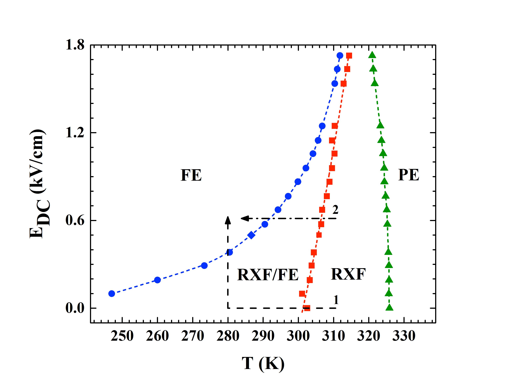
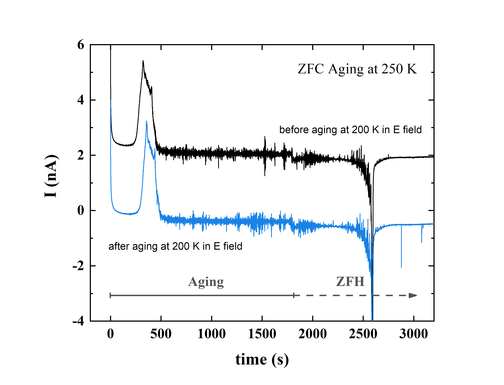
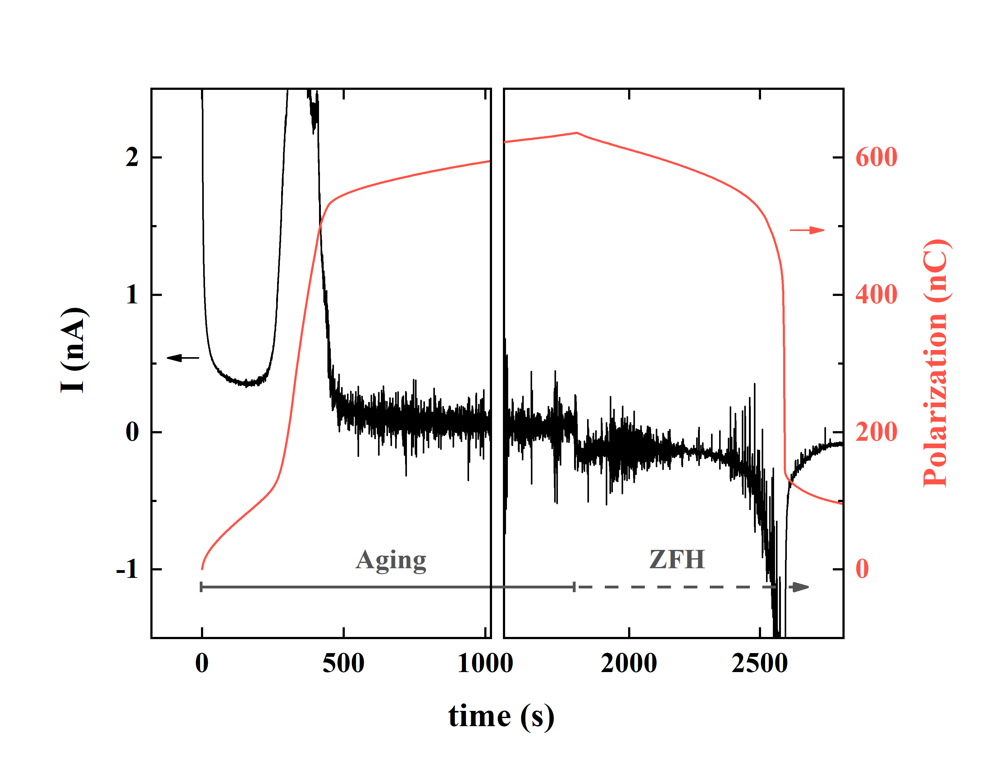
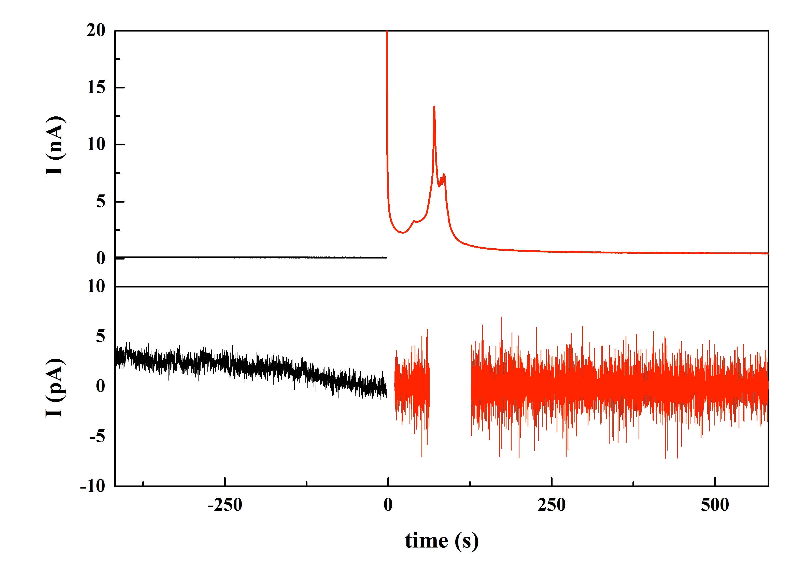
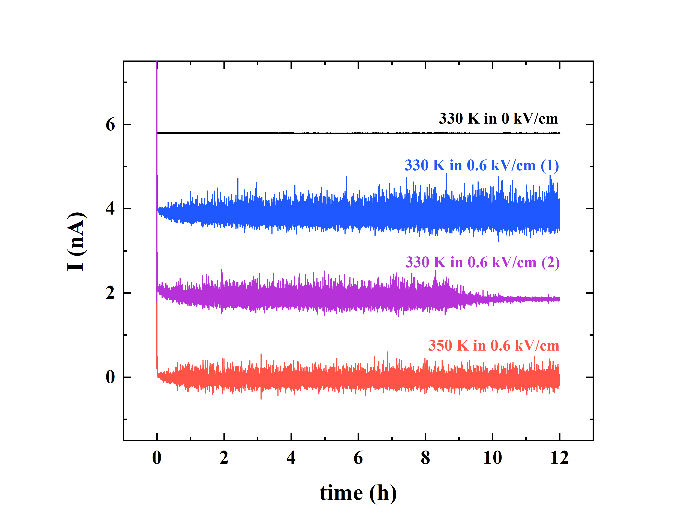
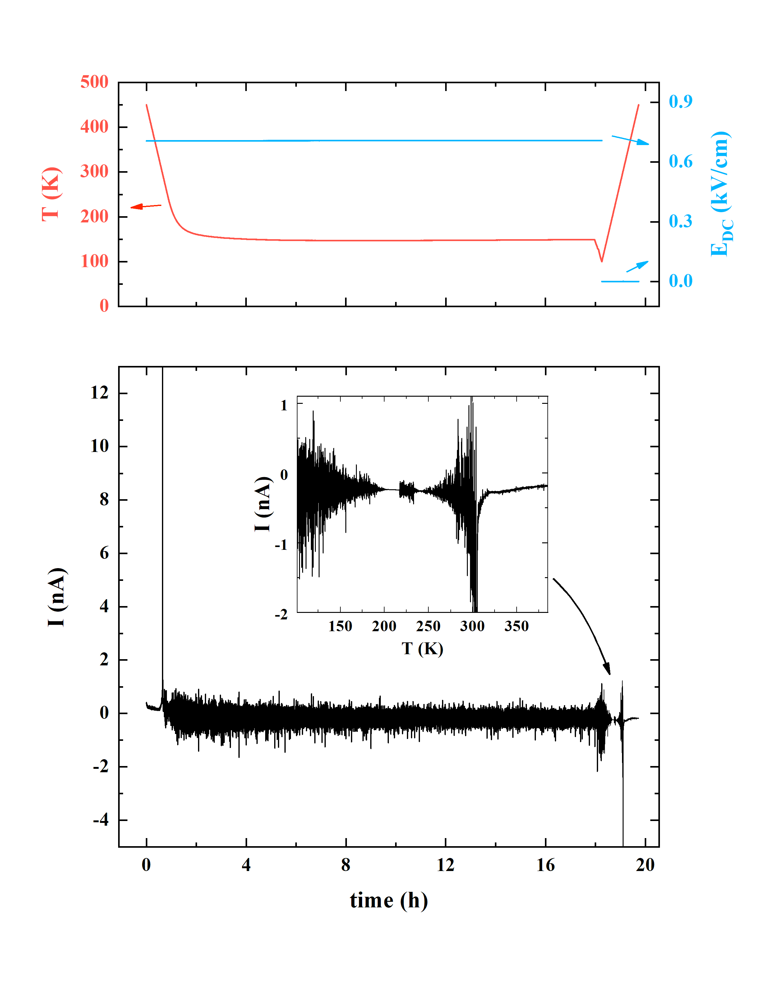
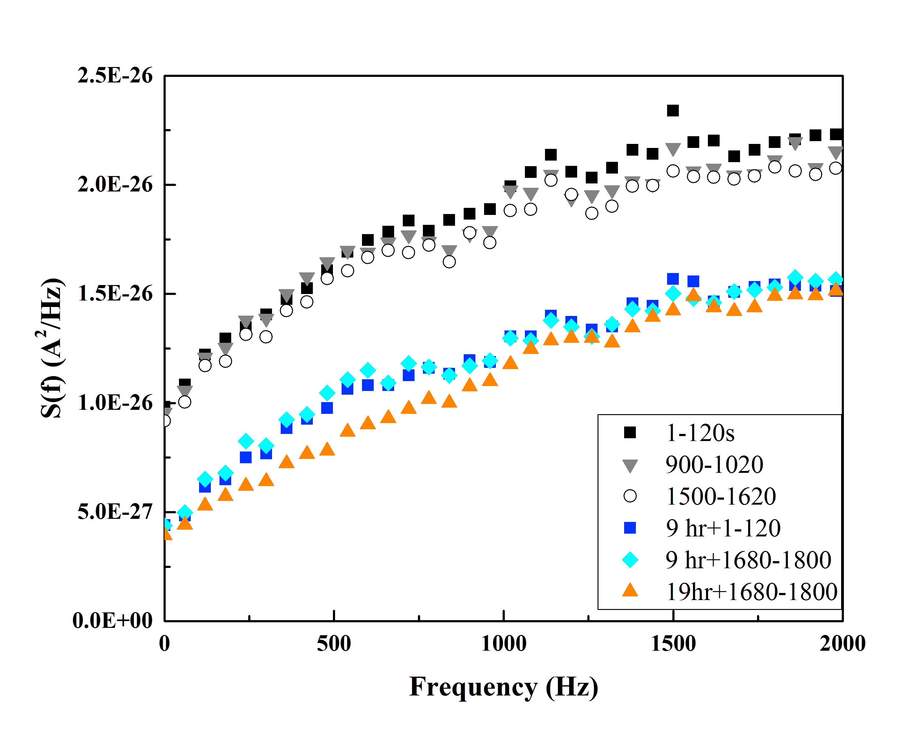

Colla 1 Non-equilibrium Strain Relaxation Noise in the Relaxor Ferroelectric (PbMg1 /3 Nb 2/3 O ) 100-x ( PbTiO ) x Xinyang Zhang , Thomas J. Kennedy , Eugene V. Colla , M. B. Weissman , and D. D. Viehland Department of Physics University of Illinois at Urbana-Champaign 1110 West Green Street, Urbana, IL 61801-3080 Department of Materials Science and Engineering, Virginia Tech, Blacksburg, Virginia 24061
Colla 2 Large low-frequency noise is found in some perovskite relaxor ferreoelectrics when they are polarized, regardless of whether the polarization is accompanied by an applied electric field. The noise appears both in the ferroelectric and relaxor states, including in the nominally ergodic paraelectric state at temperatures above the susceptibility peak. Since it is present whenever the samples are microphonic due to piezoelectricity but not evident when they are not microphonic, it appears to be a response to mechanical strain changes. Dependence of the noise on sample thermal history indicates that non-equilibrium strain relaxation is the source, even in the temperature range for which the sample is nominally ergodic. Non-equilibrium noise in the absence of net piezoelectricity is found at somewhat higher frequencies. PACS numbers: 77.80.-e, 75.10.Nr, 77.84.-s,
Colla 3 Introduction Several perovskite relaxor ferroelectrics 1, 2 in the PMN-PT family, (PbMg 1/3 Nb 2/3 O ) 100-x (PbTiO ) x (which we call here PMNPTx), have been observed to show very large low-frequency polarization noise of unknown origins. 3, 4 , 5 Since this noise is far above the fluctuation-dissipation noise level required by thermodynamics, it can limit the materials’ use as sensitive electromechanical transducers. The effect is far more dramatic than the relatively subtle violations of the fluctuation-dissipation relation found in non-equilibrium spinglasses. Its origin presents an interesting puzzle. It has previously been noted that the noise is present whenever the sample is polarized, i.e. has a net piezoelectric coefficient, and absent when the sample is not polarized. Since the noise therefore appears only when the sample is microphonic, extraneous mechanical vibrations are the obvious first suspect for the source, but these have been consistently ruled out by simple tests to reduce or increase such vibrations, e.g. turning off noisy pumps or stomping around near the cryostat. In a previous paper, we presented preliminary speculation that the low-frequency noise was internally generated, i.e. that the material is mechanically creaking and groaning in a non- equilibrium way. Here we present evidence, based largely on sensitivity to thermal and field histories, confirming that speculation. Materials and Methods The samples of PMNPT12 and PMNPT20 are from the same batch previously described in our work on the kinetics of forming the ferroelectric (FE) phase. They were grown by a modified Bridgman technique and supplied by TRS Technologies (State College, PA). The samples were configured as parallel-plate capacitors oriented with the applied E along a [111] axis, an easy
Colla 4 polarization axis for the ferroelectric state. Contacts were made via evaporated Ag layers of roughly 200nm thickness on top of adhesion-enhancing ~10 nm thick evaporated Cr layers. The PMNPT12 sample started at ~0.4mm thick, becoming slightly thinner for later measurements after repolishing. Its contact area was a 1 mm disk out of a crystal area ~2 mm by ~3 mm. The PMNPT20 sample was 0.48mm thick with contacts 1.11 mm by 0.75mm out of a total area ~4.22mm by ~0.75mm. Fig. 1 shows an empirical phase diagram of a similar PMNPT12 sample, illustrating the ergodic paraelectric (PE), non-ergodic relaxor paraelectric (RXF), and the FE regimes, as well as the hysteresis between RXF and FE. The PMNPT20 sample shows similar behavior with somewhat higher characteristic temperatures. The noise studies here included the FE regime, the metastable RXF regime, the stable RXF regime, and the PE regime. The measurement circuitry, described elsewhere , allows the sample voltage to be fixed with ac and dc biases while the polarization current I P (t) is measured at a rate of ~10 samples/sec. Using a low-pass filter (usually set at 20 Hz) allows simultaneous measurement of the systematic polarization current and low-frequency (LF) noise in I P (t) along with the complex dielectric response function, ε ’-i ε ”, measured at 100 Hz (using a 28.3 mV rms ac drive) on an unfiltered channel. High-frequency (HF) noise was measured via a channel with a high-pass filter set at 1.0 Hz followed by an antialias low-pass filter at 2.1 kHz with 5kHz sampling, in runs where the ac susceptibility was not measured. In order to reduce electromagnetic pickup the nitrogen-flow transfer-line cryostat was mounted inside a double-wall mu-metal shield. The shield was supported on a sand pile to reduce vibrational pickup. Results
Colla 5 As before 3-5 , we found large low-frequency noise when the samples were polarized. The noise was insensitive to very large changes in acoustic input, including turning the nearby vacuum pump on or off and even tapping softly on the transfer line. Fig. 2 shows I P (t) measured at 250K in an applied dc voltage, as the PMNPT12 sample converts from the metastable RXF phase to the FE phase over several hundred seconds. The noise in I P (t) grows steadily as the polarization creeps up in the RXF phase, then grows further as the polarization increases in the fairly abrupt transition to the FE phase. After the transition the noise gradually decreases slightly. When the applied voltage is removed (causing little change in the polarization) the noise magnitude remains approximately constant. As the sample is subsequently heated the noise magnitude changes as a function of T, reaching a minimum at about 280K, rising as the sample starts to depolarize, then falling to very low levels after the sample abruptly depolarizes on the transition back to the relaxor phase. The noise level and its dependence on polarization during this sort of protocol were very similar to those observed in PMN some years ago. Figure 3 shows similar data for the PMNPT20 sample. The same qualitative effects are found, but the LF noise level is significantly lower, roughly three orders of magnitude in spectral density, than in the similar PMNPT12 or PMN samples. We have seen a similar reduction in each 20% sample studied. To test whether the low-frequency noise inherently involved the FE phase we looked for it above the equilibrium FE transition line, in the PE state of PMNPT12. When the sample was polarized via an applied voltage, the LF noise appeared, as shown in Fig. 4. In this regime, in which the polarization relaxes back to very nearly zero after the applied field is removed we cannot separately check the voltage and polarization dependences, unlike in the lower- temperature regime which exhibits large remnant polarization. The presence of the LF noise in this regime, above the peak in ε ’(T), shows that it does not require either any long-range FE order
Colla 6 or even the major slow polarization response of the nominally non-ergodic RXF regime. Nevertheless, the asymmetry (more upward spikes) evident in the plots indicates that despite being in the PE regime, a small amount of the sample polarization is occurring after long delays via occasional steps. Immediately after the voltage is applied in this regime, there is a transient period in which the LF noise gradually builds up. That effect is not simply due to an increase in the microphonic sensitivity, since the polarization itself does not show a significant delayed build-up. On longer time scales, as shown in Fig. 3b, the LF noise sometimes starts to decrease again, consistent with it coming from very slow relaxation toward equilibrium. Since the noise appears to come from some microphonic sensitivity to slow strain relaxations in response to thermal and field history, we checked whether it could be reduced by annealing the sample at high temperature, 773 K, to reduce internal strain. On the initial cool-down after such annealing, the LF noise in the PMNPT12 was indeed substantially reduced, although not eliminated. The insert of Fig. 5 shows the most dramatic effect of this treatment, a sharp reduction in the noise on the first passage warming in field in part of the temperature range around 200 K - 250 K. This result is consistent with annealing reducing the non-equilibrium strain, but could also be consistent with other explanations, since the contacts had to be re-applied after the annealing. After further thermal cycling and field application, the LF noise returned to approximately the pre-annealing magnitude, although with a slightly shifted temperature of the minimum on warming. Fig. 5 also shows a slow decrease in noise magnitude during the long period at 150K. In the temperature range of our measurements these materials are filled with polar nanodomains (PND), on a scale of ~10nm, each highly piezoelectric. 8, 9 To account for why the low-frequency noise becomes evident only when the samples have net polarization, the low- frequency strain changes must be correlated over regions containing many PND. That would give
Colla 7 a piezoelectric voltage that is a coherent sum when the sample is polarized but a much smaller incoherent sum in the net unpolarized condition. The PMNPT20 sample, which shows relatively little LF noise, gave non-equilibrium noise in the HF channel even while sitting at 370 K with E=0 after cooling from 600 K anneal. This temperature is approximately where the 100 Hz susceptibility peaks. Typical spectra are shown in Fig. 6. The noise magnitude gradually decreased with a typical time-scale of hours. The approximate absolute magnitudes and general time course were reproducible. The susceptibility also showed aging under these conditions, but the magnitude of the susceptibility aging was much too small to account for the size of the noise aging. Other experiments, not shown, found spectral density a little higher than the 9 hour results as the sample passed through the range 365 K to 375 K on rapid warming of the sample from 350 K. Discussion Polarized PMN and PMNx show low-frequency current noise far above the value expected in equilibrium. The magnitude depends strongly on sample thermal and field history. Although after temperature cycling and field changes the noise persists for periods of days or longer, it does at least sometimes gradually reduce, as expected for a non-equilibrium effect. Even non-polarized PMNPT20 in the PE state can show large non-equilibrium current noise in a frequency range comparable to the typical dielectric relaxation rate. The dependences of the noise on field and temperature and on their histories are consistent with a picture of non-equilibrium strain relaxation. Even when a sample appears to be near equilibrium, i.e. with its polarization very close to the long-term expectation for a given average field and temperature, the internal pattern of the PND’s, interacting both by strain and electric fields, appears usually to be far from equilibrium.
Colla 8 Although unpolarized samples do not show the unusual low-frequency noise, they can show a slowly decreasing non-equilibrium noise at higher frequencies. We believe that the explanation for the distinction is that the long-range correlated relaxations are slow and show up very little unless there is systematic piezoelectricity, while faster relaxations with only short-range correlations show up about equally regardless of whether the piezo coefficients of different PND have the same sign. The large long-lasting non-equilibrium noise presents obvious difficulties for use of these relaxor materials as sensitive low-noise microphonic detectors. Its magnitude does depend on field and temperature history and does decrease (sometimes very gradually) under constant E-T conditions, so the difficulties should not be insurmountable. X. Zhang was funded by the John A. Gardner Undergraduate Research Award. TJK was supported by the Lorella M. Jones Summer Research Award and the Philip J. and Betty M. Anthony Undergraduate Research Award.
Colla 9 A. A. Bokov and Z.-G. Ye, J. Mater. Sci. , 31 (2006). L. E. Cross, Ferroelectrics , 305 (1994). E. V. Colla and M. B. Weissman, Phys. Rev. B , 104106 (2005). E. V. Colla, D. Vigil, J. Timmerwilke, M. B. Weissman, D. D. Viehland, and B. Dkhil, Phys. Rev. B , 214201 (2007). Xinyang Zhang, C. Mellinger, E. V. Colla, M. B. Weissman, and D. D. Viehland, Phys. Rev. B , 144203 (2017). D. Hérisson and M. Ocio, Phys Rev Lett. , 257202 (2002). E. V. Colla, J. R. Jeliazkov, M. B. Weissman, D. D. Viehland, and Z.-G. Ye, Phys. Rev. B , 024205 (2014). R. Pirc, R. Blinc, and V. S. Vikhnin, Physical Review B (Condensed Matter and Materials Physics) , 212105 (2004). Z. G. Ye, Y. Bing, J. Gao, A. A. Bokov, P. Stephens, B. Noheda, and G. Shirane, Physical Review B , 104104 (2003).
Colla 10 for the noise studies shows the equilibrium paraelectric phase (PE), separated by a frequency-dependent crossover from the non-equilibrium relaxor state (RXF). The RXF is separated from the FE state by a nearly rate-independent melting line and a rate- dependent freezing line. Path “1” shows a ZFC process and path “2” shows an FC process crossing into the FE state.
 image.10.1[395*303]Colla 11 Fig. 2a. Typical plots of the low-frequency I P (t) during polarization and depolarization are shown. The experimental procedure was: 1) ZFC at 4 K/min to 250 K, aging at 250 K with E= 0.6 kV/cm applied at t=0 for 1800 s, E set to zero at t= 1800s and starting heating at 4K/min to 450 K; 2) ZFC-aging at 200 K in 0.6 kV/cm for 12 hrs, ZFH to 450 K; 3) repeat of process (1). The figures show the low-frequency I P (t) for processes (1) and (3). The ferroelectric order forms in the peak near t= 400 s and melts abruptly at t of around 2600 s, with T near 300K. The time to the ferroelectric transition after field application was slightly shorter in the first run and the quiet point for LF noise on warming occurred at slightly higher T in that run.
 image.11.1[467*357]Colla 12 P (t) curve from Fig. 2a around the times of the abrupt polarization and depolarization. The smooth curve shows the net polarization.
 image.12.1[467*357]Colla 13 P (t) is shown for the PMNPT20 sample at 295 K with a field of 520 V/cm turned on at t=0. The lower graph shows a blow-up of the top curve, with the part after the field was applied detrended to keep it in-range. The trend in the E=0 part is from ordinary LF background noise.
 image.13.1[467*327]Colla 14 P (t) is shown as a function of time elapsed after applying a field of 0.6 kV/cm to PMNPT12 at 330K or 350K, above the peak in susceptibility vs. T . Most runs showed LF noise gradually building up over the first hour and remaining about the same magnitude thereafter. However, during one 330K run LF noise fell off dramatically after 10 hrs.
 image.14.1[467*357]Colla 15 P (t) after the PMNPT12 sample was annealed in a furnace in air at 500° C. The temperature ramp rate was roughly 4 K/min for heating and 1 K/min for cooling. Since original electrodes disappeared after the annealing, a new pair of electrodes were deposited right after the annealing. During the initial field-cooling from 450 K to 100 K, the measurement system unexpectedly stuck at ~150 K in 0.7 kV/cm overnight. A ZFH to 450 K followed the unexpected aging at 150 K. As shown in the temperature and field profiles, the field was then set to zero, the sample cooled to 100 K and then warmed in zero field. The LF noise was lower than normal and, as shown in the inset, became negligible in a narrow temperature range during warming.
 image.15.1[467*440]Colla 16 cooling at E=0 from 600K. Each spectrum is taken from a 120 s period. The spectral density fell during aging, with most of the drop occurring in the first 9 hours. Instrumental background has not been subtracted.
 image.16.1[467*381]